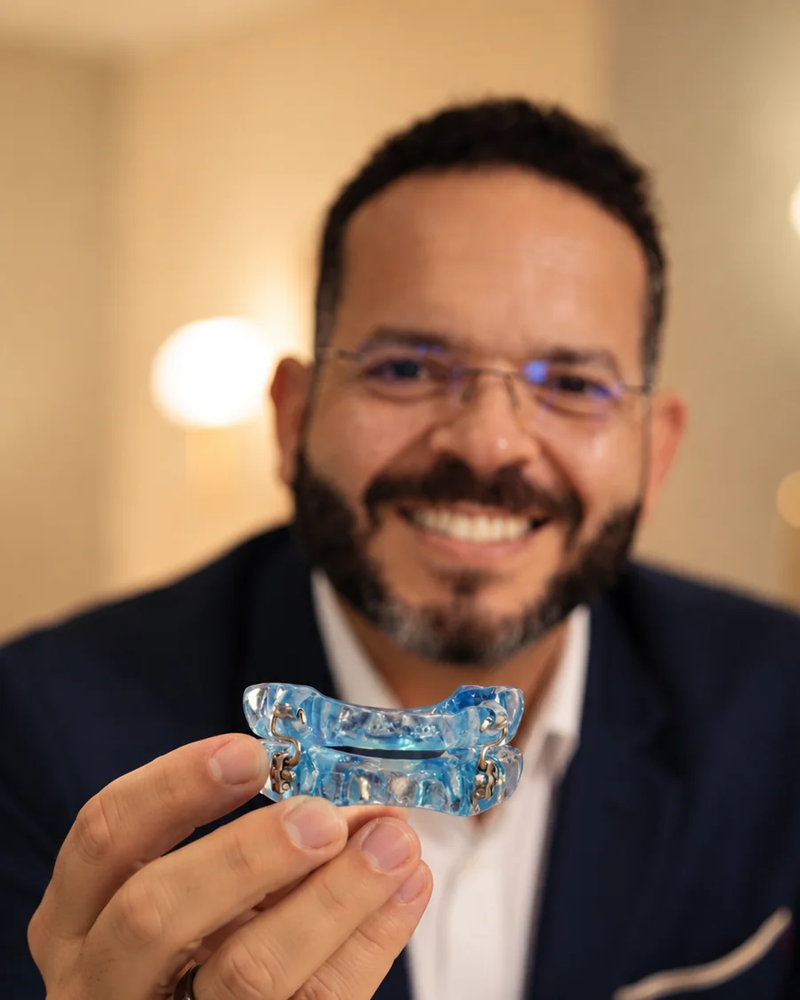
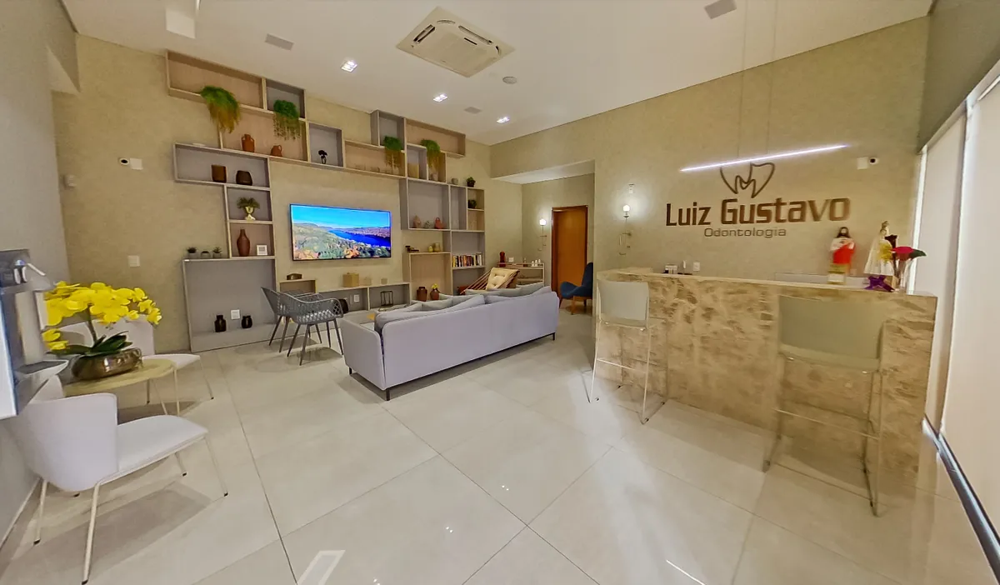
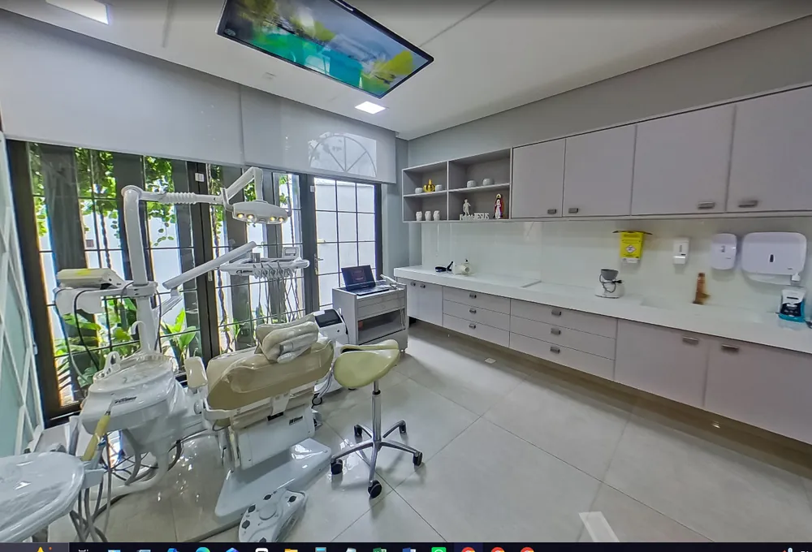
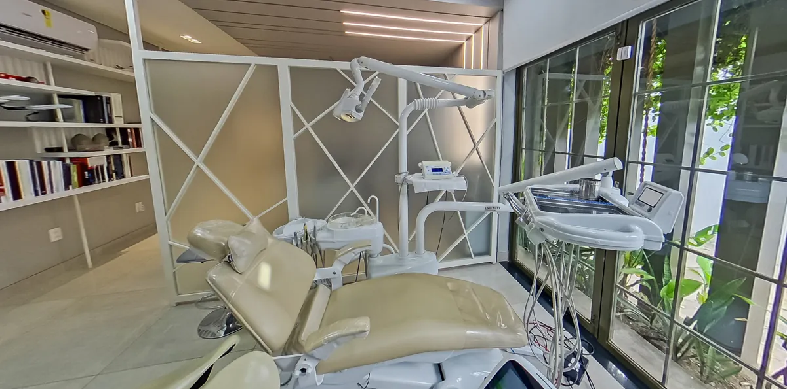
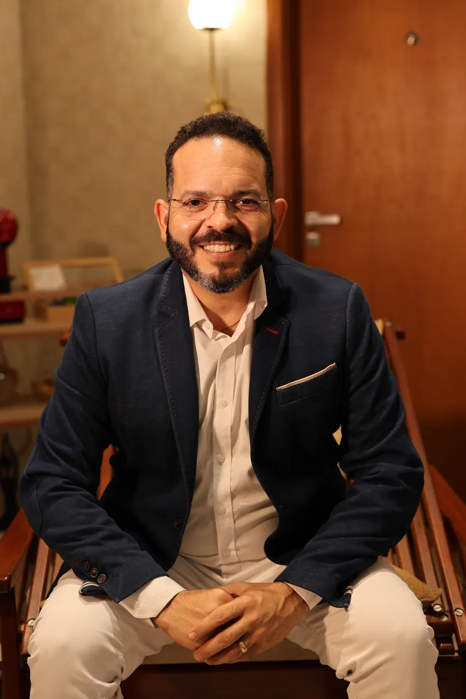

20 anos de experiência em ronco e apneia do sono no Piauí
Laboratório de prótese próprio
Membro da Academia Americana Dental de Medicina do Sono
Estrutura completa em São Cristóvão, Teresina
Você se reconhece?
O ronco e a apneia vão muito além do barulho.
O ronco e a apneia afetam o corpo inteiro. Se você convive com alguns destes sinais, é hora de investigar.
01Ronco alto e frequente
02Acorda cansado mesmo dormindo a noite toda
03Cansaço e sonolência durante o dia
04Dificuldade de concentração
05Falhas de memória
06Ganho de peso constante
07Queda na libido
08Incomoda o sono de quem dorme ao seu lado
Apneia do sono não é frescura. É saúde.
Durante a apneia, a respiração é interrompida várias vezes por noite. Com o tempo, isso sobrecarrega o corpo e afeta funções que só o sono de qualidade consegue restaurar. Tratar cedo é cuidar do seu coração, da sua cabeça e da sua energia.
Com quem é referência
Você ronca ou tem apneia? Veja o que fazer.
O Dr. Luiz Gustavo explica, de forma simples, como o aparelho intraoral de avanço mandibular trata o ronco e a apneia do sono e devolve as suas noites.
Antes de tratar, a gente descobre o que acontece enquanto você dorme.
Na Clínica Luiz Gustavo, o cuidado começa pelo diagnóstico. Você faz o exame do sono com a tecnologia Biologix, no conforto da sua casa, e conta com uma estrutura completa para cuidar do seu caso do começo ao fim.
Exame do sono
Tecnologia Biologix
Um exame que monitora o seu sono e identifica as pausas na respiração, feito na sua própria casa, sem internação.
Estrutura integrada
Radiologia e laboratório próprios
Diagnóstico, exames e a produção do aparelho reunidos na mesma clínica, com mais controle e agilidade.
Do início ao fim
Acompanhamento especializado
Da análise do exame ao ajuste do aparelho, você é acompanhado de perto por uma equipe dedicada ao sono.
Diagnóstico preciso. Entender a causa e a gravidade do seu caso é o que garante o tratamento certo para o seu ronco e a sua apneia.

A solução para o ronco e a apneia
Um aparelho simples que trata o ronco e a apneia.
Para tratar o ronco e a apneia, usamos um aparelho intraoral, um dispositivo móvel de acrílico feito sob medida para a sua boca, no nosso laboratório de prótese próprio. Parece um protetor bucal transparente: discreto, leve e confortável.
Usado durante o sono, ele avança levemente a mandíbula e mantém as vias aéreas abertas, facilitando a passagem do ar. O resultado é um sono mais tranquilo, sem o ronco e sem as pausas na respiração.
Diferente do CPAP, não tem máquina, não tem barulho e não resseca a garganta. É só colocar e dormir.
Fim do ronco
Desobstrui a passagem de ar e silencia o ronco que incomoda você e quem dorme ao seu lado.
Apneia sob controle
Reduz as pausas na respiração durante o sono e devolve o descanso profundo que restaura o corpo.
Mais energia
Acaba com o cansaço e a sonolência, melhora a atenção e a memória no dia a dia.
Praticidade total
Sem fios e sem máscara. Fácil de limpar e de levar em qualquer viagem.
Do primeiro contato ao acompanhamento, você é atendido em um ambiente completo, com tecnologia moderna e o laboratório de prótese dentro da própria clínica.

Recepção acolhedoraConforto desde a chegada

Consultórios equipadosTecnologia para diagnóstico preciso

Estrutura completaAmbiente moderno e climatizado
Laboratório de prótese próprio. Seu aparelho intraoral é planejado e produzido dentro da clínica, com mais controle de qualidade e ajuste sob medida.
Bruxismo
Range ou aperta os dentes durante a noite?
O bruxismo é o ranger ou apertar involuntário dos dentes. Além de desgastar o sorriso, ele causa dores e tensões que você leva para o dia seguinte.
Sinais e sintomas
Dores na mandíbula ao acordar
Desgaste dos dentes
Dores de cabeça frequentes
Tensão no rosto e no pescoço
Desconforto na articulação mandibular
Possíveis causas
Estresse e ansiedade
Má oclusão dentária
Uso excessivo de cafeína e álcool
Hábitos e comportamentos involuntários
Na Clínica Luiz Gustavo, o tratamento é definido com diagnóstico específico, exames radiológicos avançados e tecnologia de ponta, para tratar a causa e proteger a sua saúde bucal.

Dr. Luiz GustavoCRO-PI 1726 · Fundador
Membro da Academia Americana Dental de Medicina do Sono e da Sociedade Brasileira de Reabilitação Oral.
Por que tratar na Clínica Luiz Gustavo
Referência em ronco e apneia do sono no Piauí.
A Clínica Luiz Gustavo reúne estrutura completa, laboratório de prótese próprio e um protocolo de tratamento de ronco e apneia conduzido por uma equipe especializada. À frente dela está o Dr. Luiz Gustavo, com mais de 20 anos de experiência no cuidado com distúrbios do sono.
Protocolo de sono conduzido por uma equipe, com a chancela do fundador.
01Diagnóstico preciso
Avaliação com exames para entender a causa do seu caso antes de qualquer tratamento.
02Aparelho sob medida
Feito exclusivamente para a sua boca, no nosso laboratório de prótese próprio.
03Acompanhamento próximo
Você é acompanhado de perto, com ajustes periódicos, até dormir bem de verdade.
Quem cuida de você
Uma equipe dedicada ao tratamento de ronco e apneia.
O tratamento segue o protocolo de medicina do sono desenvolvido pelo Dr. Luiz Gustavo. Cada profissional do núcleo é preparado para conduzir o seu caso com o mesmo cuidado e a mesma técnica.
Fundador do núcleoDr. Luiz Gustavo
CRO-PI 1726
Responsável técnico e criador do protocolo de medicina do sono da clínica. Membro da Academia Americana Dental de Medicina do Sono, com mais de 20 anos de experiência no cuidado com distúrbios do sono.
Núcleo em expansão, com novos profissionais em breve.
★★★★★
“Me sinto muito mais confortável usando esse aparelho do que com o CPAP. Ele ressecava menos a minha garganta e trouxe de volta a salivação natural. Para mim foi um ganho extra, além do próprio tratamento.”
Suzane JalesTratamento de ronco e apneia
Localização e contato
Estamos perto de você.
Endereço
Av. Vilmary, 2636, São Cristóvão, Teresina, PI, 64051-120